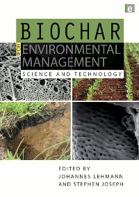

"There is one way we could save ourselves..."
In a recent interview in New Scientist James Lovelock, originator of the Gaia theory, cited biochar as the one chance we have left to save humankind.
Finally, the long-awaited “biochar bible” has been published. I have been reading and reviewing Lehmann and Joseph’s textbook on biochar for the past month, and I am thoroughly impressed. The edited collection of articles treads the difficult line between technical terminology and layperson’s vocabulary without losing any scientific rigor or lapsing into exclusionary jargon. Biochar for Environmental Management covers engineering, environmental sciences, agricultural sciences, economics and policy.
This is a very readable and well organized, up to the minute introduction to the world of biochar. You could teach a full course out of this book, or excerpt discussions and details to backup your own presentations to policy makers, businesses, farmers and community groups.
I have a few personal tests for the usability and appeal of a new book, akin to the “can’t put it down” test. I fully admit a certain nerd-like orientation when it comes to the biosphere, living systems, restoration ecology and climate change so when a book becomes a constant companion at bedside and breakfast table, it wins points. The fact that the information is organized so I can open to chapters at random and eventually get the full picture, or read more conventionally from start to finish tells me that the narrative is well conceived and the information presented holistically. I like that about a book, and the information landscape covered is thorough enough to justify all 384 pages. When plopped onto a desk, this gives the book the sort of gravitas that immediately commands respect.
"If it finds a wide enough readership, it will change our world forever, and very much for the better."Tim Flannery, from the foreword to Biochar for Environmental Management
To get a 20% discount for the book you can type TEPUI into the voucher code box when buying the book here.
About Biochar:
”Biochar is the carbon-rich product when biomass (such as wood, manure or crop residues) is heated in a closed container with little or no available air. It can be used to improve agriculture and the environment in several ways, and its stability in soil and superior nutrient-retention properties make it an ideal soil amendment to increase crop yields. In addition to this, biochar sequestration, in combination with sustainable biomass production, can be carbon-negative and therefore used to actively remove carbon dioxide from the atmosphere, with major implications for mitigation of climate change. Biochar production can also be combined with bioenergy production through the use of the gases that are given off in the pyrolysis process”.
The Editors:
Johannes Lehmann, associate professor of soil biogeochemistry and soil fertility management at Cornell University, is co-founder and Chair of the Board of the International Biochar Initiative, and member of the editorial boards of Nutrient Cycling in Agroecosystems and Plant and Soil.
Dr Stephen Joseph is a visiting professor at the School of Materials Science and Engineering at the University of New South Wales, Australia and Vice Chairman of the International Biochar Initiative